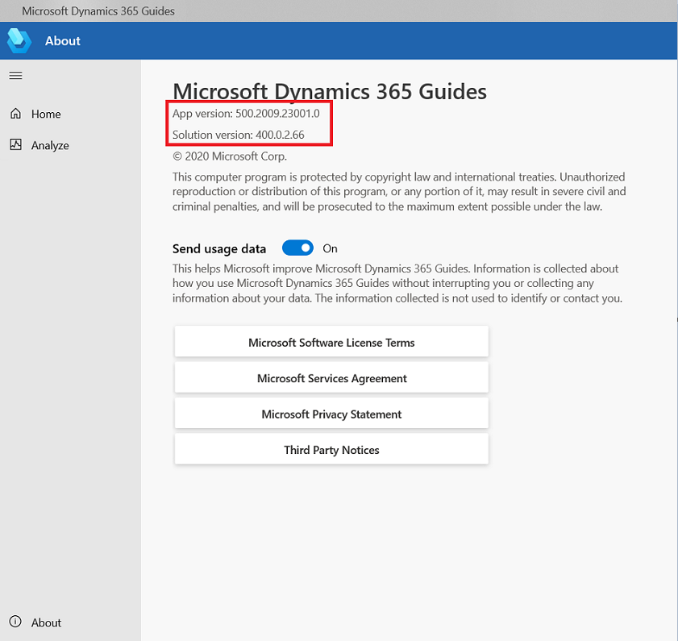
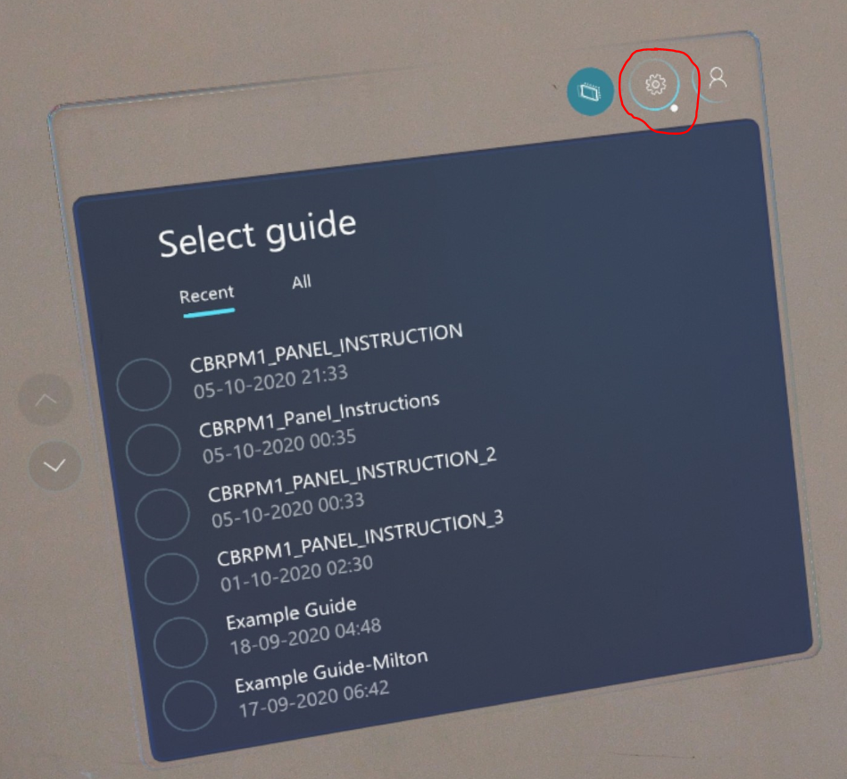
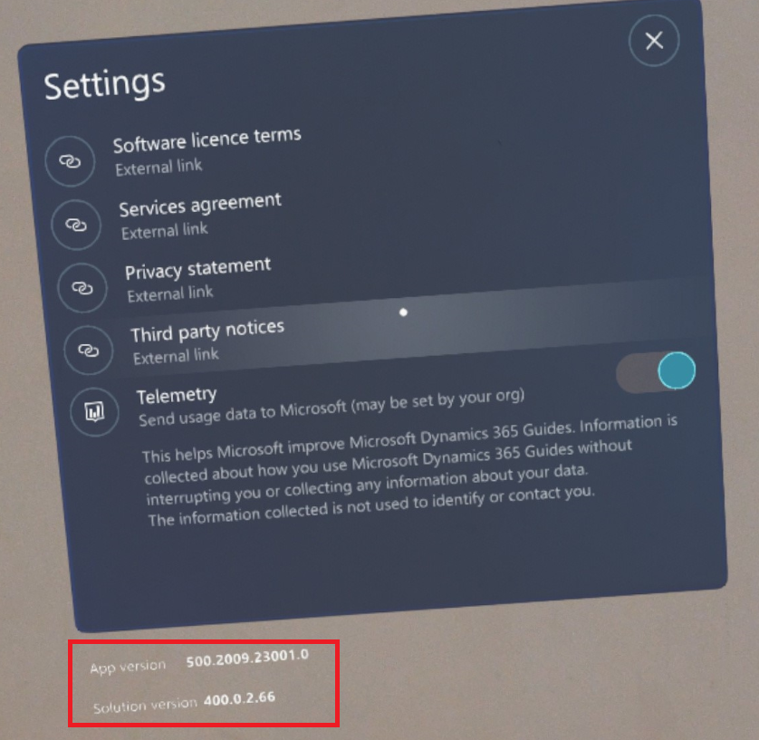
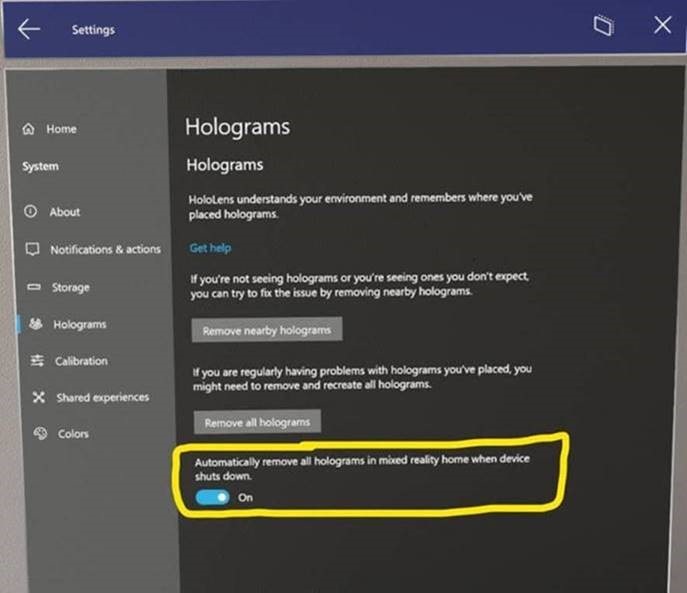
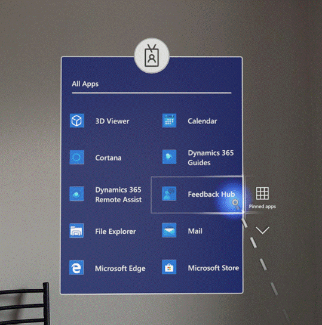

Frequently Asked Questions
How to update HoloLens Operating System (OS) & know it version?
For checking HoloLens OS version – On HoloLens go to settings app -> System -> About & to update it.
How to install apps on HoloLens?
Find, install, and uninstall applications from the Microsoft Store
How to know the current version of D365 Guides PC App?
- Open Guides PC App and Login
- Choose your Instance
- Then select About at bottom left of the screen to know the App version as shown below

How to know the current version of D365 Guides HoloLens App?
- Open D365 Guides app on HoloLens and login
- After Selecting the instance select the setting gear icon as shown below

- At the bottom of the screen you will find the current app version installed on your HoloLens

How to remove all Holograms in one click?
Make sure that you update your HoloLens OS to latest version using broadband internet connection or with a hotspot having good internet speed because this update might be more than 1 GB and it would take lot of time with slow internet. Also make sure that your HoloLens device is connected to power supply (not through PC USB charging but through physical socket) while you are updating the OS and battery level is more than 70%.
After this, navigate to Settings -> System-> Holograms and you can click on button "Remove all holograms". my recommendation is to turn the slider to “On” for “Automatically remove all holograms in mixed reality home when device shuts down”. This new setting will help to avoid any case where an application has been left running. To put it to use, be sure to power down the HoloLens by holding the power button until you see “Goodbye” on the screen when you are done using it.

What to do in case of general HoloLens issue and provide logs to Microsoft?
To file a feedback through Feedback Hub, navigate to the Feedback Hub app on your HL2 (may need to go to ‘All apps’). Give the feedback a name of “<Title of the issue>” but avoid including any detail about Eaton in the feedback as these are posted publicly. Once you submit the feedback item, please provide IT Innovation team with the date and time of submission.

Where can I find Microsoft official documentation on Guides?
Get started with Dynamics 365 Guides